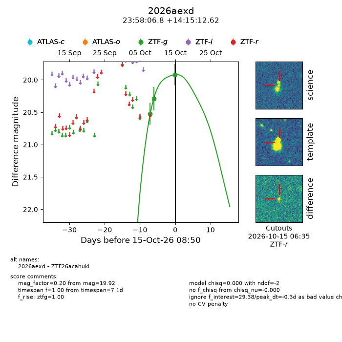
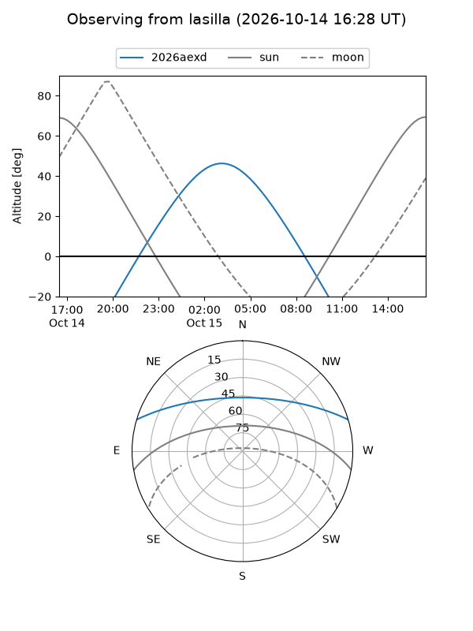
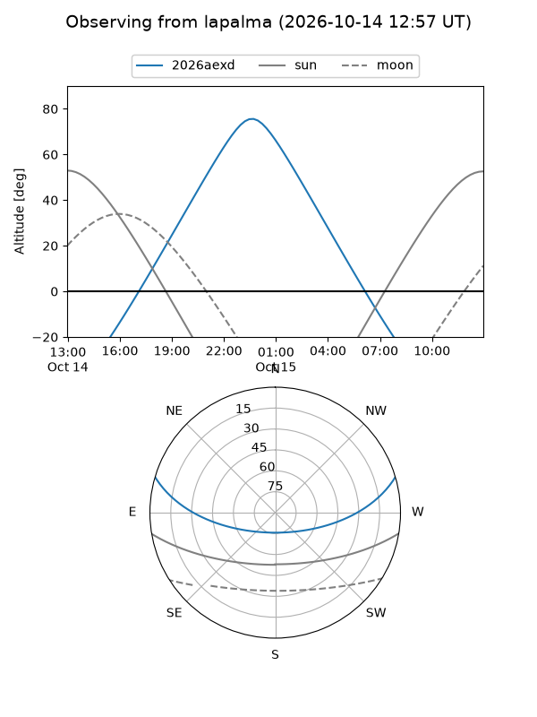
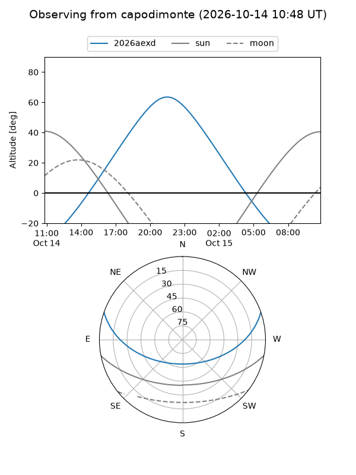
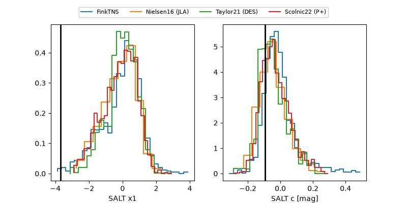

2026aexd
Target 2026aexd at 2026-10-15 08:51
Aliases and brokers:
FINK-ZTF: ztf.fink-portal.org/ZTF26acahuki
Lasair-ZTF: lasair-ztf.lsst.ac.uk/objects/ZTF26acahuki
ALeRCE-ZTF: alerce.online/object/ZTF26acahuki
YSE-PZ: ziggy.ucolick.org/yse/transient_detail/2026aexd
TNS name: wis-tns.org/object/2026aexd
Direct TNS query: direct search
alt names
ZTF26acahuki (ztf,fink_ztf)
2026aexd (tns,yse)
Coordinates:
equatorial (ra, dec) = 359.5283,+14.25350
equatorial (HMS+DMS) = 23:58:06.79,+14:15:12.62
galactic (l, b) = (103.9354,-46.64197)
Flags:
peak dt: -0.3
Photometry:
last ztfg=19.92
3 ztfg detections
Lightcurve

Visibility



Additional plots
